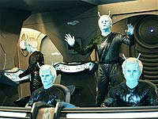
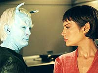
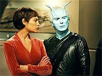
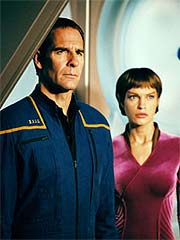

|

|
|
MANCHETE
DO EPISDIO
|
Roteiristas
conseguem achar meio
convincente de trazer Shran Extenso
Episdio
anterior | Prximo
episdio
Sinopse:
A bordo de sua nave, o Andoriano Shran discute com seu primeiro oficial. Eles esto procura da Enterprise. Enquanto isso, o Conselho Xindi se rene com Degra, o projetista da arma que ir destruir a Terra. Ele comunica que o prottipo est pronto e que haver um teste em trs dias. Se tudo ocorrer conforme os planos, eles podero fazer seu ataque em um ms.
Na Enterprise, Hoshi conta a Archer que encontrou o sinal da quemosita modificada que Archer havia implantado na nave Xindi. T'Pol informa que ela e Hoshi tm trabalhado juntos para restaurar os dados perdidos dos computadores da nave. A oficial de comunicaes informa que recuperaram 30% dos dados perdidos a partir do ncleo de memria redundante, que o suficiente para montar um mapa das anomalias espaciais.
 Para chegar localizao de onde a quemosita est emitindo seu sinal, eles precisam atravessar um denso campo de anomalias. Enquanto fazem a travessia, a nave passa por uma anomalia especialmente acentuada que danifica sistemas e fere tripulantes por toda a nave. De repente a nave capturada por um raio trator. A nave captora abre um canal de comunicao e Archer descobre que Shran.
A bordo da NX-01, o Andoriano revela a T'Pol e Archer que os localizou usando a assinatura de dobra, conforme eles haviam registrado em seu ltimo encontro. Como as naves Andorianas so mais rpidas que a Enterprise, foi fcil alcan-la. Shran diz que est l para ajudar Archer a encontrar a arma Xindi, uma vez que ningum veio ao auxlio dos humanos, nem mesmo os Vulcanos.
Mais tarde, na sala de armamentos, Reed apresenta seu relatrio de danos sobre os sistemas de defesa e armas. Archer informa que Shran ofereceu ajuda de seu oficial ttico para os reparos. Reed no quer dar acesso ao sistemas crticos, mas Archer diz que eles precisam correr para seguir o sinal da quemosita. Reed ento concorda em aceitar a ajuda Andoriana.
No corredor, T'Pol sugere que Archer designe guardas para acompanhar os Andorianos trabalhando a bordo. Ele discorda, dizendo que os problemas entre Vulcanos e Andorianos no envolvem os humanos e que confia em Shran.
No refeitrio, Trip e Malcolm esto discutindo os danos que a nave sofreu quando a tenente Talas, da nave Andoriana, vem e se apresenta. Reed e ela tm uma antipatia mtua imediata.
Archer e Shran terminam o jantar na sala privativa do capito e o Andoriano traz uma garrafa de cerveja Andoriana. Ele diz a Archer que se voluntariou para a misso, por ter muita experincia com os humanos. Tambm, ele acha que precisa pagar uma dvida com Archer, depois que o capito conseguiu evitar uma guerra entre Andoria e os Vulcanos. Eles brindam em nome da nova aliana.
T'Pol e Trip discutem os reparos na engenharia. Ele diz que levaria dois dias para conclu-los, mas, com a ajuda dos Andorianos, ser possvel partir em 12 horas.
 Enquanto isso, na sala de armamentos, Malcolm, que est trabalhando sozinho no realinhamento dos rels, acaba sendo muito rude com a tenente Talas a todo momento. Ela decide sair, mas antes disso diz que seria melhor ele reinicializar o sincronizador EPS. Malcolm percebe que ela est l para realmente ajud-lo, pede desculpas e aceita a participao da Andoriana nos trabalhos.
Em algumas horas a Enterprise retoma seu curso rumo arma Xindi. Eles descobrem quatro naves Xindis orbitando ao redor de uma lua. Archer acredita que um campo de provas de algum tipo, um lugar para testar novas armas. Eles bolam um plano para obter leituras da nave discretamente.
Algum tempo depois, quando Shran est andando na direo da comporta de atracao com sua prpria nave, Trip vai at ele e pergunta se pode obter um dos injetores de antimatria dos Andorianos. Enquanto Trip pressuriza a comporta, Shran oferece suas condolncias pela morte da irm de Trip. Ele diz ao engenheiro que seu irmo morreu em uma das escaramuas de fronteira com os Vulcanos muitos anos atrs e que ele entende a necessidade de vingana. Trip afirma que est l para evitar que os Xindis tenham a chance de terminar o que comearam. Ele pede novamente a ajuda de Shran, que concorda em ceder o injetor.
Os Xindis comeam a armar o prottipo quando seus sensores detectam uma nave nas vizinhanas. Eles abortam o teste e recebem uma transmisso da nave. Shran, que est agindo como representante do Consrcio de Minerao Andoriano. Ele fige estar procurando um raro e valioso elemento chamado Archerita. Ele diz que suas leituras indicam presena do elemento naquele sistema. Degra ameaa destruir sua nave a no ser que eles interrompam os rastreios e partam imediatamente. Shran concorda.
Mais tarde, na Enterprise, Shran, T'Pol e Archer esto discutindo a arma. Archer diz que pretende roub-la e lev-la Terra, para que os cientistas possam desenvolver uma defesa. Shran sugere que esperem ate que os Xindis tenham testado a arma, para que possam obter mais dados.
Shran e Archer acompanham o teste da arma Xindi. Ela quase destri a lua em seu disparo. O Conselho Xindi est muito desapontado com o fato de que a lua no foi destruda. Na Enterprise, T'Pol diz que houve flutuaes de energia e que o teste fracassou. Archer acredita que Gralik tenha feito o que prometeu: ajudar os humanos de algum modo.
Como a arma ainda est emitindo altos nveis de radiao, Archer pergunta a T'Pol se possvel escudar alguma das baas de carga para traz-la a bordo. Ela diz que sua proteo insuficiente para garantir a segurana da tripulao. Shran oferece sua nave, uma vez que seu campo de fora ser suficiente para reter a radiao. Ele prope guard-la at que os nveis de radiao sejam seguros o suficiente para transferi-la Enterprise. Archer concorda, mas insiste em estar a bordo para acompanhar a operao. Aps uma discusso, Shran cede.
A bordo de sua nave, Shran contata seu oficial superior. Ele est impressionado pelos dados enviados sobre a arma. Shran tenta dizer a ele que os humanos podem ser aliados valiosos, mas o superior insiste que quem tiver essa arma no precisa de aliados.
O plano para recuperar a arma colocado em ao. A Enterprise distrai duas das naves Xindis enquanto a nave de Shran captura a arma. A NX-01 desativa as duas naves e os dois aliados saem em disparada. Shran d a ordem de retornar a Andoria. Archer est revoltado com a traio. O Andoriano diz que os Vulcanos no atacaro com a arma Xindi sob o comando de Andoria. Ele tambm diz que a tenente Talas danificou o conjunto de sensores principais --a Enterprise no poder ach-los. Ele despacha Archer num casulo de escape.
Com Archer de volta Enterprise, T'Pol e Malcolm do seus relatrios. Malcolm diz ao capito que andou vigiando a tenente Talas e descobriu sua sabotagem. Ao alcanarem Shran, Archer ordena que lhe devolvam a arma ou os humanos a destruiro. Eles interceptaram os cdigos de ativao quando os Xindis conduziram o teste. Shran no acredita nele, ento T'Pol transmite os cdigos. Shran contata a baa de carga e um tripulante informa que a arma foi ativada. Eles a abandonam e ela explode no espao. A nave Andoriana danificada, mas eles rejeitam ajuda da Enterprise.
No Centro de Comando, T'Pol e Hoshi descobrem que algum na nave Andoriana enviou varreduras detalhadas da arma disfaradas de interferncia subespacial. Archer, que acredita que Shran foi o responsvel, fica muito feliz, e convida T'Pol para jantar com ele, com cerveja Andoriana para acompanhar.
Comentrios:
Voc considerava impossvel encaixar os Andorianos nesse arco Xindi sem criar uma histria boba e forada? Depois de
"Proving Ground", melhor voc repensar seus conceitos. No contexto do arco, trata-se de um dos segmentos mais importantes. No contexto da srie, d novas texturas aos j interessantes Andorianos, sob o comando de Shran.
um daqueles tpicos episdios que capturam o senso de como deveria ser uma srie caso resolvesse apostar no tema da fundao da Federao. Como espcies to dspares, como humanos, Andorianos e Vulcanos, podem colocar de lado suas diferenas e conceber alianas que sejam benficas a todos eles?
"Proving Ground" lida com tudo isso, de forma inteligente e imprevisvel, adicionando novos graus de complexidade ao arco Xindi e sua importncia no contexto do futuro de
Jornada nas Estrelas.
 Primeiro, a razo declarada pela qual os Andorianos entram na Extenso Dlfica para procurar a Enterprise totalmente justificada --faz sentido eles tentarem conquistar a confiana dos humanos a fim de convert-los em potenciais aliados contra seus arquiinimigos, os Vulcanos. "Onde esto eles, quando voc precisa de ajuda?", pergunta Shran a Archer. E complementa: "Ns estamos aqui".
A estrutura narrativa notavelmente eficaz no esforo de esconder ao mximo a real motivao dos Andorianos --a verdadeira misso de Shran no conquistar a confiana dos humanos, mas sim obter a arma que os Xindis esto desenvolvendo contra a Terra para romper o equilbrio de poder existente entre Andoria e Vulcano.
Apesar disso, a agenda oculta no impede os Andorianos de estabelecer laos de identificao com os tripulantes da Enterprise. Essa situao especialmente representada pela relao, primeiro hostil, mas depois amistosa, entre Talas, a oficial ttica Andoriana, e Malcolm Reed. O oficial de armamentos da Enterprise finalmente volta a aparecer de um modo menos que perifrico, depois de passar boa parte da temporada dando tiros (no que ele tenha se queixado disso).
E o principal relacionamento, claro, entre Shran e Archer. Claramente, o vnculo que une esses dois uma das preciosidades de cada nova apario de Jeffrey Combs como o azulzinho favorito dos fs. Trata-se de uma relao estranha, mas profunda, que aprendemos a respeitar, com todas as idiossincrasias que envolvem os dois personagens.
O episdio tambm valioso pelo lado da ao. Vemos mais deliberaes do Conselho Xindi, que est perdendo a pacincia com Degra, e temos a oportunidade de observar um teste "fracassado" de um prottipo da arma --em vez de destruir uma lua, s quebraram-na no meio.
O ardil concebido por Archer e Shran para tomar posse da arma Xindi tambm foi um elemento interessante e bem executado, especialmente com a interpretao vigorosa de Jeffrey Combs como um membro do "Consrcio Minerador Andoriano". E o capito da Enterprise mostrou que j no perde mais o rebolado, como nas temporadas anteriores. Apesar de a princpio cair na armadilha dos Andorianos, ele depois mostra toda a sua determinao ao acionar a arma Xindi em plena rea de carga da nave de Shran. Essa para eles comearem a verdadeiramente respeitar os "pele-rosadas"...
Todos os episdios que possuem os Andorianos tm uma mgica especial --no me pergunte por qu, mas que tm, tm--, e esse aqui no exceo. Alm da brilhante e sempre impressionante maquiagem, outros valores de produo tambm se destacam, como os efeitos especiais e os cenrios da nave Andoriana, nunca antes vistos em tamanho nvel de detalhamento.
 Como detalhes menores, foi inteligente usar um dos problemas criados no episdio anterior,
"Chosen Realm", para abrir este aqui --o apagamento do banco de dados da Enterprise fez com que a navegao voltasse a ser difcil na Extenso, sem o conhecimento de onde esto as esferas. Com recuperao apenas parcial dos dados, a NX-01 logo se viu em apuros, o que exigiu um providencial resgate dos Andorianos. muito bom ver que no deixaram pontas soltas com relao ao segmento anterior.
E por falar em pontas soltas, tambm interessante a concluso, em que a Enterprise recebe uma transmisso no-autorizada dos Andorianos, com dados detalhados sobre a arma Xindi --um sinal de que Shran tem muito mais simpatia por Archer do que gostariam seus superiores na Guarda Imperial! Essa histria ainda dar pano para a manga no futuro...
Com todos esses atributos, e apesar da ausncia de grandes reflexes filosficas,
"Proving Ground" se mostra uma das melhores horas da terceira temporada e possivelmente o melhor episdio com os Andorianos desde sua estria na srie, em
"The Andorian Incident".
Citaes:
Shran - "Captain Archer! Look at the trouble you've gotten your pink skin into this time."
("Capito Archer! Veja em que enrascada voc meteu sua pele rosada desta vez.")
Archer - "We keep doing each other favors."
("Estamos sempre fazendo favores um ao outro.")
Shran - "Isn't that how alliances are born?"
("No assim que nascem as alianas?")
Shran - "We're looking for a rare element --Archerite."
("Estamos procurando um elemento raro --Archerita.")
Reed - "No offense, but when it comes to our weapons frequencies, I wouldn't trust my own mother."
("Sem ofensa, mas quando se trata das freqncias das nossas armas, eu no confiaria nem na minha me.")
Trivia:
 Jeffrey Combs comentou sobre sua apario inesperada na terceira temporada. "Shran aparece na Extenso... uma surpresa para mim. um timo roteiro, na verdade."
Jeffrey Combs comentou sobre sua apario inesperada na terceira temporada. "Shran aparece na Extenso... uma surpresa para mim. um timo roteiro, na verdade."
Ele tambm falou da relao entre Shran e Archer. " de respeito. Meu personagem aqui colocado meio que
um teste de lealdade realmente interessante."
As filmagens foram de sete dias, de 30 de outubro de 2003 a 7 de novembro.
Ficha
tcnica:
Escrito por Chris Black
Direo de David Livingston
Exibido em 21/01/2004
Produo:
065
Elenco:
Scott
Bakula como Jonathan Archer
Jolene Blalock como
T'Pol
John Billingsley
como Phlox
Anthony Montgomery
como Travis Mayweather
Connor Trinneer como
Charlie 'Trip' Tucker III
Dominic Keating como
Malcolm Reed
Linda Park como Hoshi Sato
Elenco convidado:
Jeffrey Combs como Shran
Randy Oglesby como Degra
Scott MacDonald como Xindi-reptiliano
Tucker Smallwood como Xindi-humanide
Rick Worthy como Xindi-preguia
Molly Brink como Talas
Ted Sutton como general Andoriano
Josh Drennen como Thalen
Episdio
anterior | Prximo
episdio
|